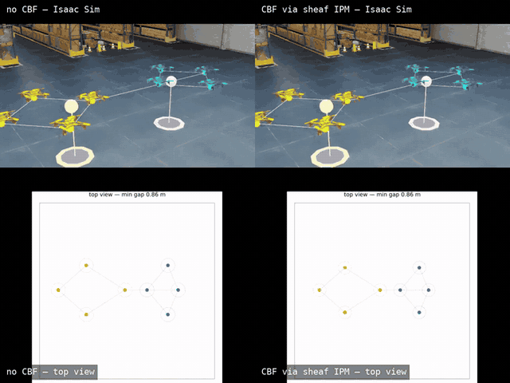

A hard safety layer: control barrier functions
Every demonstration so far keeps agents coordinated — on their sheaf reference, or as close to it as the execution layer can manage. None of them guarantee agents stay apart. When two independently-coordinated groups cross paths, the sheaf reference alone has no notion of inter-agent collision — it only knows about consensus and tracking. This page adds a decentralized control-barrier-function (CBF) safety filter as a third layer, downstream of whatever command Layer 1 + Layer 2 produce, that minimally corrects it to keep every pair of agents at a safe distance.
The safety filter
Safety is encoded by the pairwise barrier
\[h_{ij}(x) = \lVert x_i - x_j \rVert^2 - d_{\text{safe}}^2 \;\ge\; 0,\]
and the safe set is forward-invariant under $\dot h_{ij} \ge -\gamma h_{ij}$ (Ames, Coogan, Egerstedt, Notomista, Sreenath, Tabuada, "Control Barrier Functions: Theory and Applications", ECC 2019). Splitting each pair's responsibility evenly between its two agents (Wang, Ames, Egerstedt, "Safety Barrier Certificates for Collision-Free Multirobot Systems", T-RO 2017), agent $i$ enforces, for every neighbor $j$ within a sensing radius,
\[2(x_i - x_j)^\top u_i \;\ge\; -\frac{\gamma}{2} h_{ij},\]
and applies the minimally-invasive correction to its nominal command,
\[u_i^\star = \operatorname*{arg\,min}_{u} \tfrac12 \lVert u - u_{\text{nom}} \rVert^2 \quad\text{s.t. the linear constraints above.}\]
Each per-agent filter is a small conic QP, solved through the same CellularSheaves.IPM machinery used elsewhere in this codebase — the filter is decentralized: agent $i$'s QP uses only its own position and the positions of neighbors within its sensing radius, exactly what an onboard implementation would see. It is also minimally invasive: cbf_filter returns u_nom unchanged whenever it already satisfies every constraint, so it only acts near collisions. Because it operates purely on the commanded velocity $u$, it composes unchanged with either the analytic base law or the learned residual policy from the rest of this guide — whatever produces $u_{\text{nom}}$ is not the filter's concern.
See cbf_filter / cbf_filter_all in examples/RL/lib/cbf_ipm.jl.
Demonstration: two escort rings crossing head-on
Setup. Eight agents form two rings of four (a 4-cycle consensus sheaf per ring, identity restriction maps), joined by a single bridge edge between the rings, each ring pinned to its own target. The two targets orbit on the same circle in opposite directions, so they — and their escort rings — meet head-on twice per period. The harmonic extension of this sheaf gives every agent its ring-and-target-consistent reference $q^\star$, exactly as in the rest of this guide; agents track it with the analytic sheaf feedback law.
Without the filter, tracking the sheaf reference alone drives each ring straight through the other at the crossing — the coordination layer has no notion that the two groups must not overlap. With the filter ($d_{\text{safe}}=0.55$, $\gamma=8$, sensing radius $2.0$), the same commands are corrected only in the brief window near each crossing, and the rings weave through each other instead of colliding.
Result. Over the crossing, the closest approach between any two agents is:
| minimum inter-agent gap | |
|---|---|
| no filter | $0.41$ m — below $d_{\text{safe}}$: the safe set is violated |
| CBF via the sheaf IPM | $0.55$ m — exactly $d_{\text{safe}}$: the barrier is enforced |
The filtered run rides the boundary of the safe set precisely, which is what a minimally-invasive barrier filter should do: intervene no more than necessary, and no less. The top row below is the Isaac Sim view (no filter, left; filter, right); the bottom row is the corresponding top-down trajectory view, where the deflection introduced by the filter near the crossing is visible as the agents weave rather than pass through one another.

Where this fits
This is one of the two capabilities identified as next steps toward closed-loop validation with hard safety guarantees: the sheaf still decides where each agent should be, a learned or analytic controller decides how to get there, and the CBF filter is a final, decentralized, minimally invasive layer that guarantees agents never collide while doing so — independent of whichever execution layer sits above it.